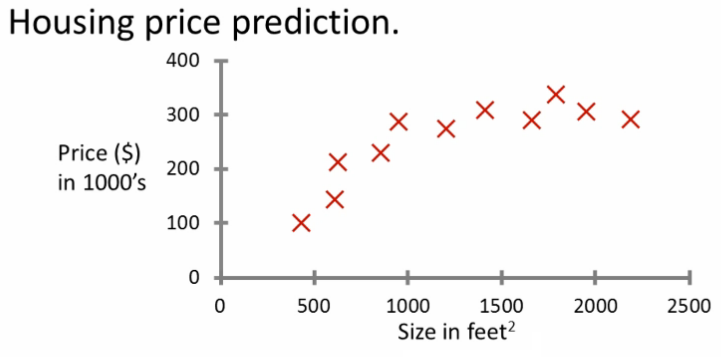

01: Introduction
Introduction to the course
Preamble
- About these notes
- These notes were originally written by me (Alex) in the fall of 2011 based on what was then one of the first MOOC [massively open online courses] produced by Dr. Andrew Ng (Stanford)
- The current iteration of this course is available here
- I took the course and kept (and in many places expanded) detailed notes of the topics and ideas
- I then shared these notes online in November 2011, and for a long time (2011-2019), these resources recieved million of unique views per month.
- In the summer of 2026, I (Alex) - with some help from my buddy Claude Opus 4.6 - converted these notes from the horrific HTML they were previously first to clean HTML (replacing screenshots of equations with actual equations where possible), and then reverse-engineered the notes into markdown and wrote a simple parser to convert that markdown back to HTML.
- I also extended to some more modern AL/ML ideas, with the goal of continuining to expand these notes with material sufficient to provide a solid foundation in modern AI/ML/DL
- As of Sept. 2026 I am working through the notes to update/clarify fix things
- However, the notes retain their terse, to-the-point style with the goal of being high-yeild easy-to-read material to establish the foundations of machine learning and deep learning.
- These notes were originally written by me (Alex) in the fall of 2011 based on what was then one of the first MOOC [massively open online courses] produced by Dr. Andrew Ng (Stanford)
Course overview
- We will learn about
- State of the art
- How to do the implementation
- Historic applications of machine learning include
- Search
- Photo tagging
- Spam filters
- More modern applications include
- Generative image creation tools
- Chatbots
- Agentic workflows to orchestrate thins
- The (historic) AI dream was to build machines as intelligent as humans
- In 2026, the moving target is to do this safely and ethically
- What is the best way to build machine learning systems?
- One school of thought: mimic how humans learn.
- Driven reinforcement learning
- Another school of thought: the best models simply use the most data and the most compute - trying to mimic humans is appealing to our own brains, but largely futile.
- Driven deep learning
- One school of thought: mimic how humans learn.
- What the course covers
- Learn classic, foundational algorithms
- But the algorithms and math alone are no good
- Need to know how to get these to work in problems
- Why is ML so prevalent?
- Grew out of AI
- Build intelligent machines
- You can program a machine how to do some simple thing
- For the most part hard-wiring AI is too difficult
- Best way to do it is to have some way for machines to learn things themselves
- A mechanism for learning - if a machine can learn from input then it does the hard work for you
- You can program a machine how to do some simple thing
Examples
- Database mining
- Machine learning has recently become so big partly because of the huge amount of data being generated
- Large datasets from growth of automation web
- Sources of data include
- Web data (click-stream or click through data)
- Mine to understand users better
- Huge segment of silicon valley
- Medical records
- Electronic records -> turn records into knowledge
- Biological data
- Gene sequences, ML algorithms give a better understanding of human genome
- Engineering info
- Data from sensors, log reports, photos etc
- Web data (click-stream or click through data)
- Applications that we cannot program by hand
- Autonomous helicopter
- Handwriting recognition
- This is very inexpensive because when you write an envelope, algorithms can automatically route envelopes through the post
- Natural language processing (NLP)
- AI pertaining to language
- Computer vision
- AI pertaining to vision
- Self customizing programs
- Netflix [still true in 2026]
- Amazon [still true in 2026]
- Spotify [added in 2026]
- iTunes genius [kept for historical reasons, no longer true in 2026]
- Take users info
- Learn based on your behavior
- Understand human learning and the brain
- If we can build systems that mimic (or try to mimic) how the brain works, this may push our own understanding of the associated neurobiology
What is machine learning?
- Here we...
- Define what it is
- When to use it
- Not a well defined definition
- Couple of examples of how people have tried to define it
- Arthur Samuel (1959)
- Machine learning: "Field of study that gives computers the ability to learn without being explicitly programmed"
- Samuel wrote a checkers playing program
- Had the program play 10000 games against itself
- Work out which board positions were good and bad depending on wins/losses
- Samuel wrote a checkers playing program
- Machine learning: "Field of study that gives computers the ability to learn without being explicitly programmed"
- Tom Mitchell (1998)
- Well posed learning problem: "A computer program is said to learn from experience E with respect to some class of tasks T and performance measure P, if its performance at tasks in T, as measured by P, improves with experience E."
- The checkers example,
- E = 10000s games
- T is playing checkers
- P if you win or not
- The checkers example,
- Well posed learning problem: "A computer program is said to learn from experience E with respect to some class of tasks T and performance measure P, if its performance at tasks in T, as measured by P, improves with experience E."
- Several types of learning algorithms
- Supervised learning
- Teach the computer how to do something, then let it use its new found knowledge to do it
- Unsupervised learning
- Let the computer learn how to do something, and use this to determine structure and patterns in data
- Reinforcement learning
- Recommender systems
- Supervised learning
- This course
- Look at practical advice for applying learning algorithms
- Learning a set of tools and how to apply them
Supervised learning - introduction
- Probably the most common problem type in machine learning
- Starting with an example
- How do we predict housing prices
- Collect data regarding housing prices and how they relate to size in feet
- How do we predict housing prices

- Example problem: "Given this data, a friend has a house 750 square feet - how much can they be expected to get?"
- What approaches can we use to solve this?
- Straight line through data
- Maybe $150 000
- Second order polynomial
- Maybe $200 000
- One thing we discuss later - how to choose straight or curved line?
- Each of these approaches represent a way of doing supervised learning
- Straight line through data
- What does this mean?
- We gave the algorithm a data set where a "right answer" was provided
- So we know actual prices for houses
- The idea is we can learn what makes the price a certain value from the training data
- The algorithm should then produce more right answers based on new training data where we don't know the price already
- i.e. predict the price
- We also call this a regression problem
- Predict continuous valued output (price)
- No real discrete delineation
- Another example
- Can we define breast cancer as malignant or benign based on tumour size

- Looking at data
- Five of each
- Can you estimate prognosis based on tumor size?
- This is an example of a classification problem
- Classify data into one of two discrete classes - no in between, either malignant or not
- In classification problems, can have a discrete number of possible values for the output
- e.g. maybe have four values
- 0 - benign
- 1 - type 1
- 2 - type 2
- 3 - type 3
- e.g. maybe have four values
- In classification problems we can plot data in a different way

- Use only one attribute (size)
- In other problems may have multiple attributes
- We may also, for example, know age and tumor size

- Based on that data, you can try and define separate classes by
- Drawing a straight line between the two groups
- Using a more complex function to define the two groups (which we'll discuss later)
- Then, when you have an individual with a specific tumor size and who is a specific age, you can hopefully use that information to place them into one of your classes
- You might have many features to consider
- Clump thickness
- Uniformity of cell size
- Uniformity of cell shape
- The most exciting algorithms can deal with an infinite number of features
- How do you deal with an infinite number of features?
- Neat mathematical trick in support vector machine (which we discuss later)
- If you have an infinitely long list - we can develop an algorithm to deal with that
- Summary
- Supervised learning lets you get the "right" data
- Regression problem
- Classification problem
Unsupervised learning - introduction
- Second major problem type
- In unsupervised learning, we get unlabeled data
- Just told - here is a data set, can you structure it
- One way of doing this would be to cluster data into two groups
- This is a clustering algorithm
Clustering algorithm
- Example of clustering algorithm
- Google news
- Groups news stories into cohesive groups
- Used in many other problems as well
- Genomics
- Microarray data
- Have a group of individuals
- On each measure expression of a gene
- Run algorithm to cluster individuals into types of people

- Organize computer clusters
- Identify potential weak spots or distribute workload effectively
- Social network analysis
- Customer data
- Astronomical data analysis
- Algorithms give amazing results
- Google news
- Basically
- Can you automatically generate structure
- Because we don't give it the answer, it's unsupervised learning
Cocktail party algorithm
- Cocktail party problem
- Lots of overlapping voices - hard to hear what everyone is saying
- Two people talking
- Microphones at different distances from speakers
- Lots of overlapping voices - hard to hear what everyone is saying

- Record slightly different versions of the conversation depending on where your microphone is
- But overlapping none the less
- Have recordings of the conversation from each microphone
- Give them to a cocktail party algorithm
- Algorithm processes audio recordings
- Determines there are two audio sources
- Separates out the two sources
- Is this a very complicated problem
- Algorithm can be done with one line of code!
W, s, v = np.linalg.svd((np.tile((x*x).sum(0), (x.shape[0], 1)) * x) @ x.T)- Not easy to identify
- But, programs can be short!
- Using Python (with NumPy) for examples
- Often prototype algorithms in Python to test as it's very fast
- Only when you show it works migrate it to C++
- Gives a much faster agile development
- Understanding this algorithm
svd- linear algebra routine which is built into NumPy- In C++ this would be very complicated!
- Shown that using Python to prototype is a really good way to do this